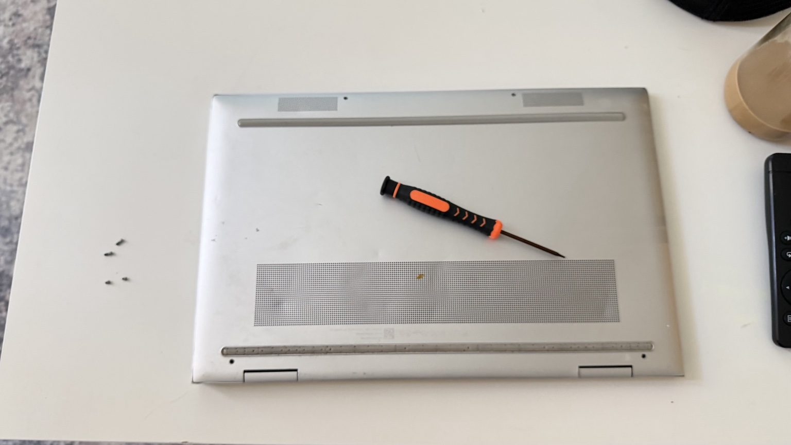
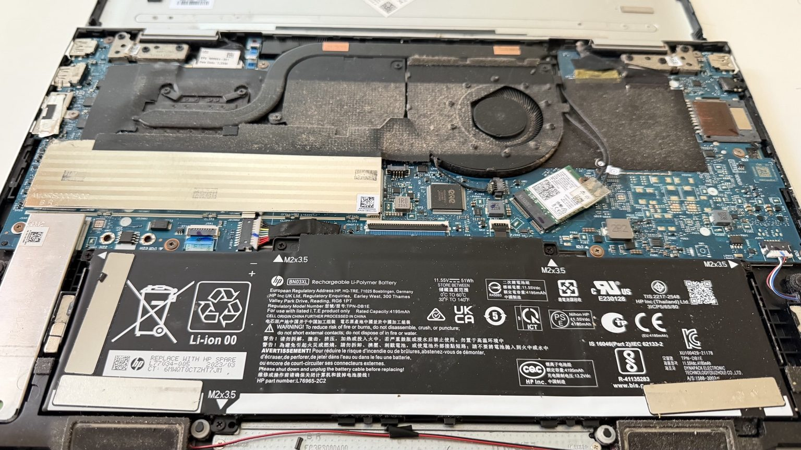
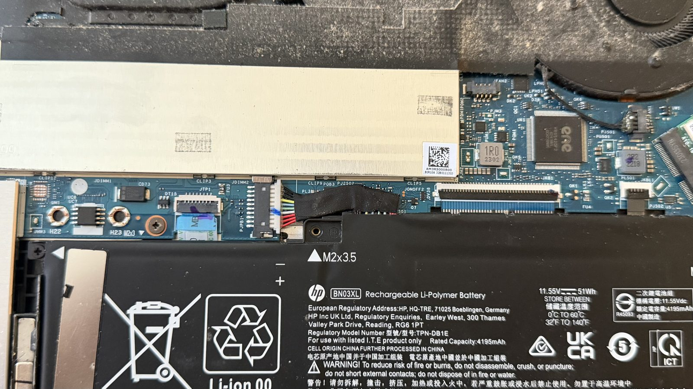
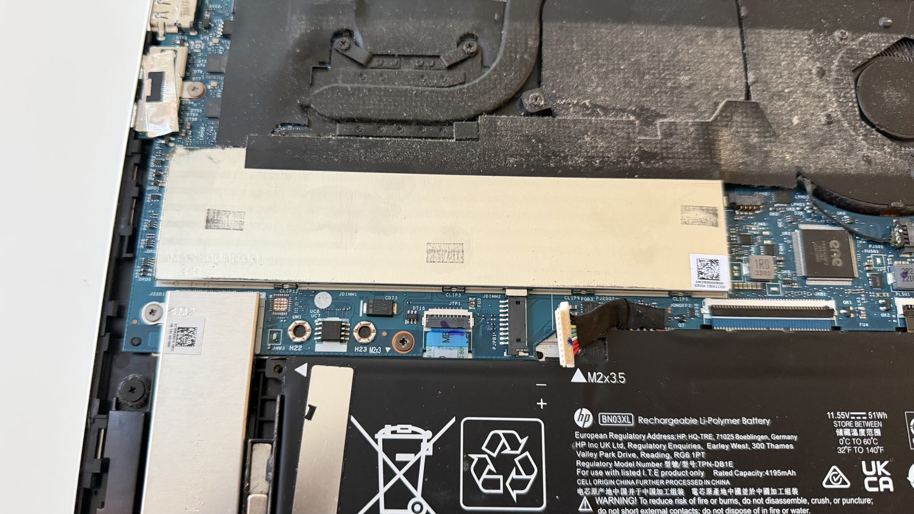
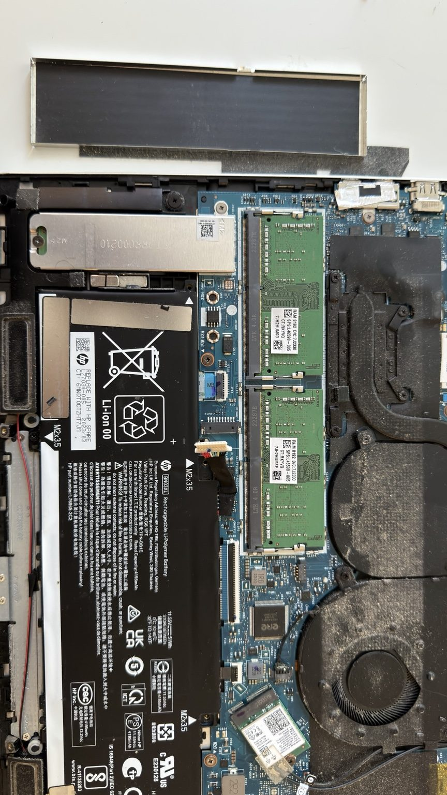
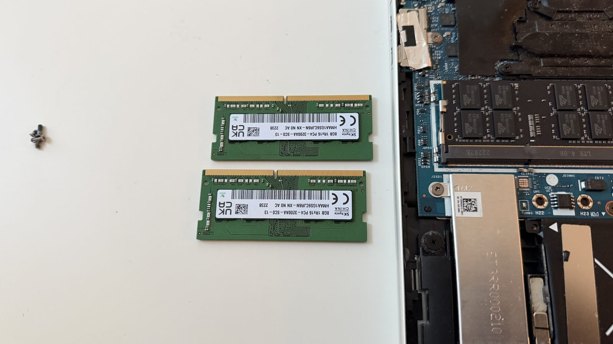
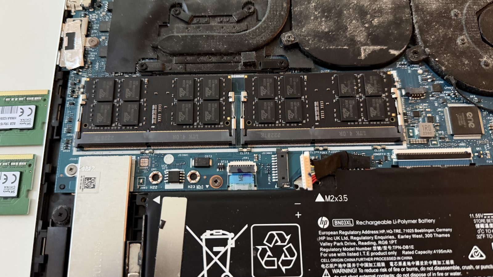
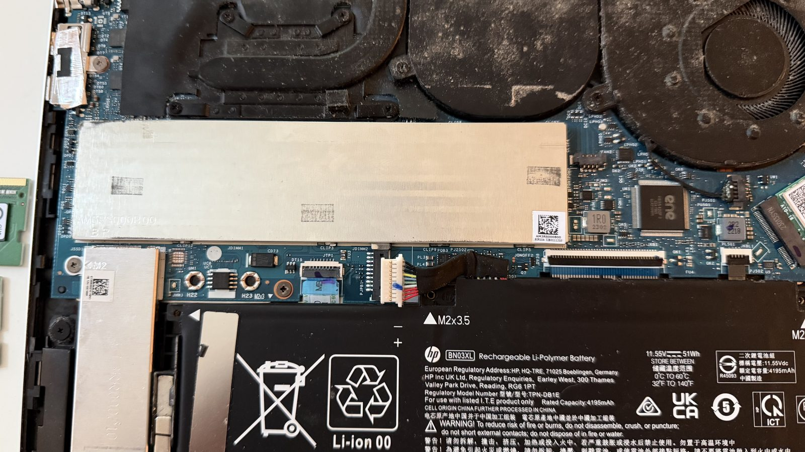
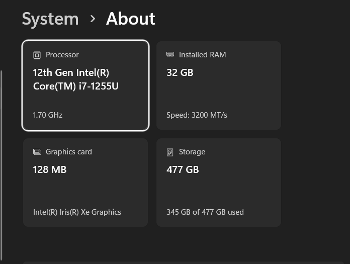

Project outcome
16 GB to 32 GB of installed RAM, recognized by Windows at 3200 MT/s.
I upgraded my HP ENVY x360 from 16 GB to 32 GB of installed RAM. The work involved opening the bottom enclosure, disconnecting the internal battery, removing the memory shield, replacing both SO-DIMMs, restoring the shield, and reconnecting the battery. After the hardware change, Windows reported 32 GB at 3200 MT/s.
The upgrade added 16 GB of installed capacity, a 100% increase. The photo record documents the physical change, and the Windows screenshot confirms that the system booted and recognized the new total. Extended memory diagnostics and application benchmarks are separate follow-up checks; they are not claimed as completed here.
| Measure | Before | After | Evidence |
|---|---|---|---|
| Installed memory | 16 GB: two 8 GB modules | 32 GB total | Original module labels and Windows System > About |
| Physical memory population | Two SO-DIMMs | Two replacement SO-DIMMs | Internal photographs before and after the swap |
| Memory specification / reported rate | Original modules labeled PC4-3200AA | Windows reports 3200 MT/s | Removed-module photograph and final screenshot |
| Processor | Intel Core i7-1255U | Intel Core i7-1255U | HP product specifications and final screenshot |
| Completion check | Original hardware documented | Windows boot and memory recognition confirmed | Final System > About screenshot |
Objective and scope
More memory headroom for the lab host
My objective was to increase the memory available to a laptop used for network and systems lab work. Virtual machines, network emulators, Windows and Linux guests, management tools, and reference material all share the host's resources. Increasing installed memory gives me more room to allocate those resources while retaining capacity for the host operating system.
This was a targeted RAM upgrade. The SSD, processor, wireless adapter, and cooling assembly remained outside the replacement scope. The report focuses on the service process and the evidence of successful memory recognition. It does not attribute a measured improvement in VM startup time, topology size, application responsiveness, or temperatures to the upgrade.
Hardware baseline
Matching the exact model to the right service guide
The laptop's product identifier is 695B0UA#ABA, corresponding to the HP ENVY x360 15-ew0023dx. HP's product datasheet lists a factory configuration of 16 GB DDR4-3200 memory in a 2 × 8 GB arrangement. The removed modules provide direct corroboration: both are SK hynix modules labeled 8 GB, with PC4-3200AA markings.
| Laptop family | HP ENVY x360 15.6-inch 2-in-1, 15-ew0 series |
|---|---|
| Specific model | 15-ew0023dx |
| Processor | 12th Gen Intel Core i7-1255U |
| Memory access | Two removable SO-DIMMs beneath a metal shield |
| Original memory | Two SK hynix 8 GB DDR4 modules |
| Final installed memory | 32 GB total, recognized by Windows |
| Final reported memory rate | 3200 MT/s |
HP's maintenance guide for the 15-ew0 series provides the relevant enclosure and memory procedures. Matching the exact chassis family matters: a guide for another ENVY x360 generation can describe a different screw arrangement or access method. The guide also distinguishes disconnecting the battery cable from removing the battery assembly; full battery removal is not required to reach the RAM on this layout.
The replacement modules' retail part number and per-slot software inventory are not captured in the evidence set. This report therefore records their confirmed combined capacity and the two occupied slots without assigning an unverified brand, rank, timing specification, or individual capacity.
Step 1
Open the bottom enclosure
I removed the bottom-cover screws and worked through the enclosure's retaining clips to expose the internal components. The first photograph records four removed screws beside the laptop. The close-up photographs taken during access also show that releasing the enclosure was the most mechanically difficult part of the job.
For this model family, HP specifies two Torx T5 M2.0 × 6.2 mm screws and two Torx T5 M2.0 × 3.2 mm screws. Their locations should be preserved during servicing so the correct lengths return to the correct holes. HP's documented opening method uses a nonmarking, nonconductive tool at the rear edge.

Step 2
Identify the internal layout
With the cover removed, the battery occupies the lower portion of the chassis, the cooling assembly runs across the upper portion, and the long metal RAM shield sits between them. The shield covers both memory slots. The separate, narrower metal cover near the side of the battery belongs to the SSD area.
Recognizing this layout kept the memory work focused on the battery connection and RAM shield. The photos also provide a reference for cable routing and the position of neighboring components before the replacement.

Step 3
Disconnect the battery before accessing the memory
I disconnected the battery cable from its motherboard socket while leaving the battery mounted in the chassis. The before-and-after photographs show the white cable plug seated in the black board connector and then separated from it. The RAM shield is still in place in the disconnected photograph, establishing the order of these two operations.
The battery connection is a distinct service checkpoint. The memory work should take place with the computer shut down, external power disconnected, and the internal battery cable detached. A sleeping computer is not ready for internal component replacement.


Step 4
Remove the RAM shield and inspect the original modules
I lifted the long metal shield away from its retaining clips, exposing the two original green SO-DIMMs. The removed shield is visible above the chassis, including its dark inner liner and attached material along one edge.
The shield has a different retention mechanism from the RAM modules beneath it. HP identifies a tab and slot used for lifting the shield. Its perimeter must later fit back into the board's shield-retention clips; the nearby cooling assembly does not need to be removed for this operation.

Step 5
Remove and document the original memory
I removed both original SO-DIMMs and photographed them beside the laptop. Their labels establish the starting capacity independently of the product datasheet: 8 GB + 8 GB = 16 GB.
The service method is to release the small retaining clips at the ends of each module, let it rise at an angle, and withdraw it along that angle. Replacement modules are aligned by the keyed notch, inserted fully into the socket, and then lowered until retained. The module edges are the appropriate handling surfaces; the contacts and chips should not be used as grip points.

Step 6
Install the replacement SO-DIMMs and inspect retention
I installed both replacement modules in the existing sockets. The wider photograph shows the new black modules in the laptop and the original green pair alongside it. The closer photograph shows the replacement modules lying flat with the retaining clips positioned at their ends.
This visual check is useful before covering the memory again. A module that is tilted, unevenly inserted, or not held by its retainers requires attention before power is restored. The photographs document the installed state; the later Windows screenshot provides the separate electrical and operating-system confirmation that the memory was recognized.


Step 7
Restore the shield and reconnect the battery
After the RAM swap, I refitted the original memory shield and reconnected the battery cable. The final internal photograph records both of these completed steps: the shield covers the memory again, and the white battery plug is back in the motherboard connector.
HP specifically calls for the shield edges to engage all of the board's retention clips. A shield sitting above the modules is not, by itself, proof that every edge is seated; that remains a physical inspection point during reassembly.

Verification
Windows confirms 32 GB at 3200 MT/s
After the installation, I opened Windows Settings → System → About. The captured screen reports 32 GB of installed RAM and 3200 MT/s, together with the Intel Core i7-1255U processor identification.

Verification results and interpretation
| Verification item | Result | Interpretation |
|---|---|---|
| Original capacity | Confirmed: two 8 GB modules | Photographed labels support the 16 GB baseline. |
| Replacement installation | Documented | Both replacement modules appear seated in the two sockets. |
| Shield restoration | Documented | The final internal photo shows the shield refitted. |
| Battery reconnection | Documented | The final internal photo shows the battery plug reconnected. |
| Windows boot | Confirmed | The post-installation Settings screenshot demonstrates a running Windows session. |
| Installed memory recognition | Confirmed: 32 GB | Windows reports the intended total capacity. |
| Reported memory data rate | Confirmed: 3200 MT/s | This is the operating-system-reported rate in the screenshot. |
| Active memory channel mode | Not captured | Two installed modules alone do not document the active channel mode. |
| Extended memory diagnostic | Not documented | Successful boot is an initial functional check, not a comprehensive stability test. |
| Before-and-after workload benchmark | Not captured | No measured application or VM performance gain is claimed. |
The supported outcome is specific: the laptop boots into Windows and recognizes twice the original installed memory capacity at a reported 3200 MT/s. This demonstrates a working 32 GB configuration on this particular machine. It does not establish the maximum supported capacity for every model in the ENVY x360 family.
Lessons learned
Enclosure access requires the right reference and tools
Getting the cover free took more effort than the memory swap itself. The access photographs show edge marks and an uneven seam during disassembly. They do not establish when every cosmetic mark occurred, but they make the value of controlled clip release clear.
For a repeat service, I would identify the exact screw layout first, map screw positions, and use a suitable plastic opening tool at the documented access edge. Excess force at a corner can turn a straightforward component change into an enclosure repair. The condition and alignment of the cover deserve their own close-out inspection.
Lessons learned
Battery isolation and component retention are separate checks
The battery plug, shield clips, and SO-DIMM retainers each serve a different purpose. Treating them as separate checkpoints made the photo sequence useful: it shows battery disconnection before memory access, the replacement modules before concealment, and the restored shield and connection afterward.
Lessons learned
The photographs should support the claims
The removed-module labels prove the original capacity. The internal photographs show the physical replacement. Windows proves that the new total is recognized. None of those observations substitutes for an extended diagnostic result or a workload benchmark.
Documenting those boundaries makes the report more useful for troubleshooting and future maintenance. It also avoids turning a capacity upgrade into an unsupported claim of doubled performance.
Lessons learned
Visible maintenance needs should be recorded separately
Dust is visible on the fan housing and surrounding cooling surfaces. That is a useful maintenance observation, but the record does not show cleaning, fan removal, thermal-paste replacement, or temperature measurements. Any later cooling service should have its own procedure and before-and-after evidence.
Lab relevance
Why this matters for my network engineering lab
This upgrade expands the memory budget of the host supporting my lab work. That matters when multiple virtual systems need to remain running together, for example a Windows client, a domain controller, Linux services, and network lab management tools.
The immediate gain is additional allocatable memory capacity. Actual VM density still depends on guest requirements, CPU demand, storage activity, virtualization configuration, and memory reserved for Windows. The upgrade does not guarantee a particular EVE-NG topology size or remove the need to plan host resources.
The work also reflects the maintenance side of engineering: identify the platform, establish a baseline, manage access to components, make a limited change, restore the assembly, and verify the result with evidence that someone else can inspect.
Next
Follow-up validation (not yet run)
The next useful checks would strengthen the completion record without changing what has already been demonstrated:
- Capture a per-slot memory inventory showing each module's capacity, manufacturer, and part number.
- Run an extended memory diagnostic and retain the actual result, test duration, and coverage information.
- Exercise a representative VM workload and record host memory use, guest allocations, and any observed errors.
- Photograph the closed enclosure and record the final fit, screw placement, and rubber-foot condition.
These are follow-up items, not completed test results.
Skills demonstrated
| Hardware identification | Exact model and product identifier matched to the relevant HP documentation. |
|---|---|
| Component-level servicing | Enclosure access, battery-cable disconnection, shield removal, and SO-DIMM replacement. |
| Reassembly | Photographed restoration of the RAM shield and battery connection. |
| Baseline and outcome verification | Original 8 GB module labels compared with the final 32 GB Windows reading. |
| Technical documentation | Ordered photographs, descriptive captions, service references, and clearly bounded conclusions. |
| Lab capacity planning | Additional installed memory connected to practical host-resource allocation needs. |
References
- HP ENVY x360 15-ew0023dx product datasheet — HP-authored specifications hosted by Best Buy; identifies the i7-1255U and original 2 × 8 GB DDR4-3200 configuration.
- HP 15-ew0 Series Maintenance and Service Guide — bottom cover — HP-authored guide mirrored on ManualsLib; printed page 35, viewer page 41, documents the two screw lengths and cover-opening method.
- HP 15-ew0 Series Maintenance and Service Guide — memory shield — Printed page 39, viewer page 45, documents battery disconnection and shield removal/restoration.
- HP 15-ew0 Series Maintenance and Service Guide — memory modules — Printed page 40, viewer page 46, documents module release, handling, and angled insertion.
- Original project evidence: my installation photographs and post-upgrade Windows System > About screenshot, shown above as Evidence 01–10.